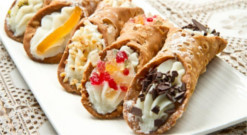
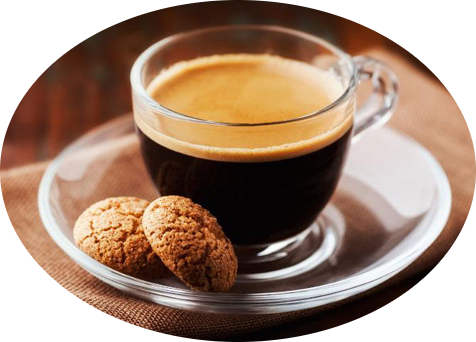

Pizze
1. Salmone Wild BC smoked salmon, capers, onions, fresh dill
2. Margherita Classic Italian pizza
3.Napoletana Anchovies
4. Guido Capers, anchovies, onions, black olives
5. Funghi Mushrooms
6. Prosciutto Cotto Ham
7. Capricciosa Salami, ham, artichokes, mushrooms, black olives
8. Vegetariana Artichokes, mushrooms, green peppers, onions
9. Siciliana Ham, capers, black olives, onions
10. Al Pesto
Pesto prepared in house from local organic basil
11. Ai Due Formaggi Two kinds of cheese, salami, ham, mushrooms
12. Inferno Hot chili paste, your own topping
13. Prosciutto e Arugula Ham and fresh, locally sourced arugula
14. Prosciutto Funghi Ham, mushrooms
15. Contadina Ham, salami, mushrooms, green peppers
16. Caprese Fresh sliced tomatoes, bocconcini, onions, capers, basil
17. Salsiccia Mushrooms, onions, green peppers, Italian sausage
18. The Drive Pepperoni, grilled artichokes, chopped tomatoes
19. Primavera Medley of seasonal vegetables
20. La Giulia Tomato pesto base, mozzarella, rosemary potatoes, onions
Pasta
1.Fusilli alla Nonna Aglio olio garnished with quark and fresh basil
2.Shells Toscana Creamy pesto sauce, sun-dried tomatoes and grilled artichokes
3.Spaghetti Pollo Piccante Spicy tomato sauce with capers, black olives and chopped oven roasted chicken
4.Spaghetti Aglio Olio Olive oil, garlic, spices and a touch of tomato
5.Spaghetti Puttanesca Spicy tomato sauce with capers and black olives
6.Linguini Vongole Fresh and baby clams in white wine sauce with a touch of tomato
7.Spaghetti Pomodoro with Mussels
8.Penne with Prawns, Scallops and Mushrooms White wine garlic sauce, with a touch of cream
9.Tagliatelle with Wild BC Smoked Salmon White wine tomato sauce with capers or Cream sauce with capers and fresh dill
10.Linguini Pesce Daily seafood in white wine sauce with a touch of tomato
11.Spaghetti alla Marinara Tomato sauce, white wine, garlic, capers and anchovies
Dessert & Coffee
Signature Cannoli Sicilian inspired trio with fresh cannoli cream served in miniature crispy cones. Three unique bites.
Tiramisu Original version of the classic Italian dessert. A rich, delightful combination of blended mascarpone with an espresso and liqueur soaked ladyfinger. Always fresh.
Bananas Doria Bananas sauteed over a slow flame in a light creme caramel sauce. Served a la mode.
Gelato Please ask your server for choice selections.
Affogato A scoop of gelato with a shot of hot espresso poured over top.
B52: Grand Marnier, Kahlua & Baileys
Monte Cristo: Grand Marnier & Kahlua
Spanish Coffee: Brandy & Kahlua
Special Coffee: Sambuca & Grand Marnier
Specialty Liqueurs
Grappa
Limoncello
Frangellico
Sambuca
Baileys
Coffees
Americano
Latte
Cappuccino
Espresso
Double Espresso
Espresso Machiato
Espresso Con Panna
